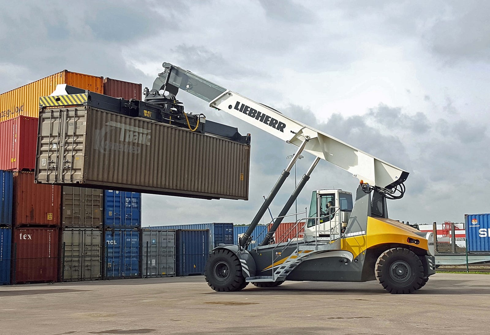
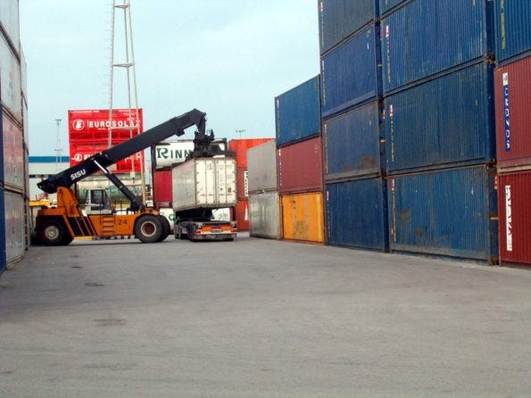
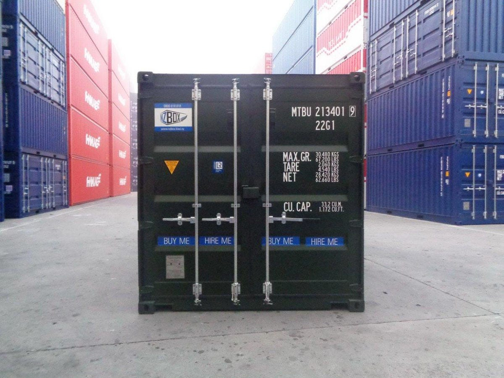
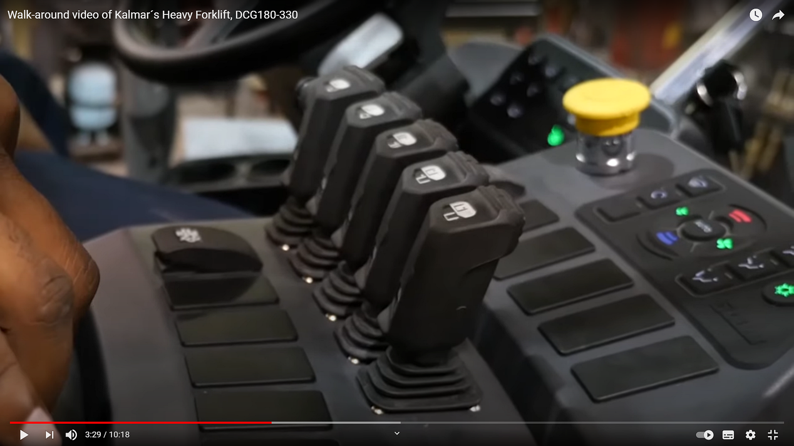
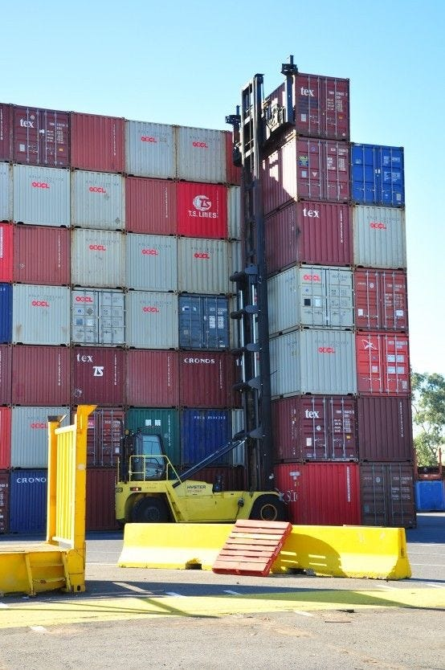

Voice-cobots in industry. A case study
A voice assistant application in the shipping container industry

Update: I participated at the www.lingofest2021.com event, 2021, March 26th, presenting my talk: Enterprise Voice Cobots, where this case study is deepened. Slides and video links available at the end of the article.
Voice assistants, for consumers at home, are nowadays taken for granted, but there is a huge space of applications of voice virtual assistants also in enterprise verticals.
I want to introduce my current R&D project, involving an innovative voice assistant application in the logistics shipping container operations.
In a sentence, the voice-cobot I conceived helps forklift vehicle drivers to load and unload shipping containers from/to yard spots from/to container trailers.

Let me share, before all, the general concept of a voice-cobot, as a possible application of a conversational assistive-reality computing. Afterward I will show the solution I found for the specific industrial scenario.
What’s a cobot?
On Wikipedia you get this definition:
“Cobots, or collaborative robots, are robots intended for direct human robot interaction within a shared space, or where humans and robots are in close proximity.”
Well, the above definition refers to industrial robots, hardware machines — capable of carrying out a complex series of actions automatically — guided by a human being, using an external control device or whit a control embedded within. Robots may be constructed on the lines of human form, but most robots are machines designed to perform a task with no regard to their aesthetics.
So in general we refer to cobots meaning industrial robots (the common case is an articulated electro-mechanical robots) that helps automate unergonomic tasks such as helping people moving heavy parts, or machine feeding or assembly operations. But that’s not what I want to talk to you about!
So what’s a Voice-Cobot?
For voice-cobot I mean a voice-interfaced digital assistant that, through a real-time spoken conversation, helps a human operator to accomplish a specific working task.
Now forget the usual virtual assistant scenario that, as end-users, we experiencing with Amazon Alexa or Google Assistant at home, through smartspeakers or smartdisplay devices. Instead I want to talk here about the special case of private virtual assistants for industry enterprises.
The disruption of a voice assistant in enterprise spaces refers to the concept of an assistive-reality computing automation made by a private, company-owned virtual assistant that collaborates with human operators (employees, skilled workers, professional technicians) to accomplish working tasks, literally having real-time conversational interactions (by voice, text, other UI).
Voice is an essential requirement, but the voice interface itself is not the game-changer, instead the collaborative enterprise-assistant computing is!
There is a common misconception where the novelty is just about the fact that you “talk to machine”, using speech (instead of chatting or using a graphical user interface), but that misses the most important point.
A voicefirst interface and maybe a voiceonly interface are — in many cases — the best way to interact with computer, in situations where the human is working “hands-on” as in the case of a vehicle driver, a machine operator, a doctor, etc.
Nevertheless, the best human-machine interface must be evaluated case-by-case and it can be made with different strategies, by example in input it could be voice, text, a camera scene, any IoT sensors, where in output it could be voice, earcons, text, graphics, light-signal devices, etc. All this could also work in parallel in a multimodal strategy.
The real innovation is not just the voice interface, but the virtual assistant collaborative logics, meaning that
enterprise processes are controlled by a single conversational-AI assisted-reality computing that interacts with human operators,
collaborating with them to accomplish workflows, and leading to time and costs savings and possibly to a better (and fun) user experience.
The case study: empty shipping containers handling
As a software engineer, consultant and researcher, I was initially asked by DITEN — Università di Genova- Dipartimento di Ingegneria Navale, Elettrica, Elettronica e delle Telecomunicazioni — to solve an apparently standard computer vision text detection/recognition problem.
The topic was to automatically recognize the shipping container marking codes, during the containers loading/unloading tasks made by an operator driving an empty container handler machine.


After some fun (I’m ironic) with text recognition from images algorithms I implemented, I soon realized how difficult is to detect texts in real-life motion scenes. It’s hard to achieve a detection system with an accuracy near to 100%. And what to do in case of the no detection/erroneous cases?
That’s why I got a trivial idea:
What if the operator dictated the code to a voice assistant? Just talking!.
My friend and account manager at DITEN University replied:
Let’s deepen, Giorgio, maybe it’s not crazy as it seems.
So Forklift-cobot born!
The concept was to supply to forklift vehicle operator, specifically empty container handler and reach stacker, a simple voice assistant command-and-control software, running on common tablet/mobile device fixed on the vehicle cabin.
The foreseen operator’s user experience concept is really simple: he gives voice commands (pull mode) to insert data, as the task name, the handled container code, the container-truck vehicle plate, yard spot name, etc.
The voice assistant checks dictated/spelled data, does search in the company backend database and stores transactions on task completion. Avoiding any stop of the operator just to insert data on a web GUI app (as currently happens).
I made two short video demonstrations of the proof-of-concept desktop-prototype I implemented, where I show the functionalities and the voice interaction activation on a mobile device.
I’m Italian and the the video are realized in Italian language, but you can enable Youtube subtitles in English.
Research & Development open points
The implemented prototype is now in the on-field test phase, where the proposed system has to be evaluated by expert senior machine operators.
Besides, there are many technical open points, mainly related to the voice recognition/audio subsystems and the on-cabin user interface ergonomics. Let me introduce some.
Speech recognition issues
Noise is a common industrial environment problem and an urgent related topic is the availability of a on-premise noise-proof ASR avoiding any cloud-enabled service. For security reasons, a key requirement is data-privacy: all business processes data transactions must not exit outside the enterprise intranet.
You need local and private (on-premise), multi-lingual, noise-proof robust speech recognition engine (ASR).
Voice activation UI, human-machine HW interfaces
A not-trivial aspect is related to find the suitable hardware interfaces with the cobot, case-by-case.
The current speech activation solution is done with multiple concurrent (working in parallel) push-to-talk solutions, as touchscreen, foot-switch activation, or physical push-button on the vehicle dashboard (see figure here below).

Also the mic/headphones subsystem has challenges solvable with many audio options: headset, open-air mic/loudspeakers, etc.

The webapp-based architecture
As shown in the videos, the prototype has been implemented with a client-server web architecture. Having implemented the client as an application running on a standard web browser on top of any mobile device, has many pros.
All the audio message exchange is realized with the Web Audio API and currently any web app (on a mobile device) can access also any internal devices (even the video camera streaming), the GPS geolocation coordinates and accelerometers (helping to localize the vehicle movement), even USB interfaced external devices (e.g. a RFID long-range reader), last but not least some Bluetooth interfaced peripherals (audio I/O, custom buttons), etc.
To wearable or not to wearable?
Another advantage of having the client running on a (web app) mobile device, is just the fact the “terminal” of the cobot run on a very cheap portable handset. You can use pretty any mobile phone or tablet, to be mounted inside a cabin and/or to be used outside the cabin, by an operator walking with the handset, for different tasks, as container positions control in the yard area, etc.
That said, the mobile device web client is just an option among many others. A “fixed” client could run on a more powerful edge-computer, or even a micro-controller.
Another alternative to mobile tablet/phones is a smartglasses wearable. Apparently that’s the definitive solution, but with a lot of issues like high costs, lack of standard API interfaces, unergonomic for an operator inside a cabin.
Conversational design
On the (software) user interface side there are interesting conversational design research topics. The current UI implementation uses a tablet/mobile device. The client-side software runs on a web browser and exploit some multimodal paradigms using voice, texts and, last but not least, usual graphical interface capabilities of a browser.
By example, in the prototype, the screen background color has been used to visually explicit the status of conversation turns between the user and the machine. Synthetic voice (TTS) short answers and prompts are accompanied by longer explanations written on the display, added by suggestions of the next steps the user could have to do, etc.
The command-and-control approach is less simple than what appears, especially if the conversation between user and the machine has to be at the same time short but nice and even engaging.
Maybe there is a challenge if you want to integrate the task-completion essential features (minimal requirements), with a domain-specific or open-domain question-answering query system, or you want to manage any user-defined alerts and reminds, an inter-operators intercom subsystem, etc.
Conversational AI backend computing
Here’s where it gets tricky. Consider the voice-cobot not just as yet another vertical application to solve a specific enterprise task.
Instead the cobot become the “enterprise’s computer” able to talk with the single user with possibly a user-defined botpersona, adapted to that user needs and preferences, and at the same time serving users for many requirements, as a single “company voice”.
The company cobot bot-persona appears to users as different (user-defined) bot-persona while being a single business logic intelligence.
Last but not least, the kernel component is the dialog manager / conversational AI intelligence.
For the prototype, because of the pretty “simple” scenario, I used my own dialog engine NaifJs — that I opensourced in 2020 — where dialog tracking is based on a state-machine approach.
For more complex scenarios, with many concurrent tasks and push mode/mixed-initiative where the assistant start a conversation, maybe to assign tasks, etc. the current implementation could be enhanced with an high-level rule-based language. This is an open research topic.
Another applied research/engineering topic is about how to “standardize” the company knowledge-base/database integration.
The problem could be solved trivially with APIs and database queries but the real challenge is to define a standard common ground company private knowledge base, to be queried and used for inferences made by the conversational AI.

Temporary conclusion
The described case study describe a very specific shipping industry scenario where a voice-cobot helps the working tasks of a container handler vehicle operator, reducing times and costs.
The described assistive-reality system is applied to a specific industrial operation, but it could be applied to many other factory tasks and different operator roles. By example, in the shipping container depots/repairs industry, the voice cobot could assists many other kind of human operator activities: truck gates automation, container inspection reporting, safety/emergency alerting, truck drivers “help desk”, operators tutoring, etc. etc.
Is all not just about another voice-interface application in industry. It’s instead about the rethinking of all business processes, where an assistive enterprise computing could collaborates with many/all humans.
Isn’t this just Industry 5.0?
2021, March 26th I participated at the www.lingofest2021.com event, presenting my talk: Enterprise Voice Cobots, where this case study is deepened.
Slides @ #lingofest2021:
https://docs.google.com/presentation/d/1ieZnAdREzEGXkcO4C_XPIbS9YAnE76mB0wpP2k-yOlQ/edit#slide=id.g4412d4946c_0_0
Video @ #lingofest2021:
Contact
If you are an enterprise company, maybe in the shipping / supply-chain/ smart-factory automation, or in any vertical where you think a voice-bot could solve a real workflow, or you are in R&D ICT company, or if you are an academic organization and you are interested on deepening this applied research contexts, I’m available to collaborate, as researcher and as a consultant.
You can contact me on linkedin or just send me an email at giorgio.robino@gmail.com.